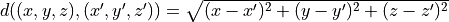

Lezione 4 - Python: Stringhe
Le stringhe sono oggetti immutabili che rappresentano testo.
Per definire una stringa, ho due alternative equivalenti:
var = "testo"
var = 'testo'
Per creare una stringa multilinea posso inserire manualmente i carattere di
a capo \n in ogni riga:
sad_joke = "Time flies like an arrow.\nFruit flies like a banana."
print(sad_joke)
oppure usare le triple virgolette:
sad_joke = """Time flies like an arrow.
Fruit flies like a banana."""
print(sad_joke)
PROVATE VOI:
Create una variabile con il vostro nome e cognome. ES: name=”Luca Marchetti”
Usate entrambe le virgolette (”” e ‘’), Cosa cambia? se stampate il type cosa cambia?
Ora create una variabile multilinea con il vostro nome e cognome.
Conversioni Stringa-Numero
Posso convertire un numero in una stringa usando str():
n = 10
print(n, type(n))
s = str(n)
print(s, type(s))
int() o float() fanno l’esatto opposto:
n = int("123")
print(n, type(n))
q = float("1.23")
print(q, type(q))
Warning
Se la stringa non descrive un numero del tipo giusto, Python da’ errore:
int("3.14") # Non e' un int
float("giardinaggio") # Non e' un numero
int("1 2 3") # Non e' un numero
int("fifteen") # Non e' un numero
PROVATE VOI:
Create 4 variabili
nome = vostro nome di tipo string
cognome = vostro cognome di tipo string
eta = vostra eta di tipo int
altezza = vostra altezza di tipo float
Convertite tutto in stringa e stampate la concatenazione (+).
Operazioni
Ritorna |
Operatore |
Significato |
|---|---|---|
|
|
Restituisce la lunghezza della stringa |
|
|
Concatena le due stringhe |
|
|
Replica la stringa |
|
|
Controlla se una stringa appare in un’altra |
|
|
Estrae una sotto-stringa |
Esempio. Concateno due stringhe:
stringa = "una" + " " + "stringa"
lunghezza = len(stringa)
print("la stringa:", stringa, "e' lunga", lunghezza)
Un altro esempio:
stringa = "basta Python!" * 1000
print("la stringa e' lunga", len(stringa), "caratteri")
Warning
Non posso concatenare stringhe con altri tipi. Ad esempio:
var = 123
print("il valore di var e'" + var)
da’ errore. Due alternative funzionanti:
print("il valore di var e'" + str(var))
oppure:
print("il valore di var e'", var)
(Nel primo caso manca uno spazio tra e' e 123.)
PROVATE VOI
Crate 3 variabili
nome = vostro nome di tipo string
cognome = vostro cognome di tipo string
eta = vostra eta di tipo int
Stampate il vostro nome età volte, stampate il vostro cognome un numero di volte uguale alla metà dei vostri anni. Es: se avessi 4 anni, il risultato sarebbe “LucaLucaLucaLuca” e “MarchettiMarchetti”
Cosa succede se avete un età dispari? :)
Esempio. L’operatore sottostringa in stringa controlla se
sottostringa appare una o piu’ volte in stringa, ad esempio:
stringa = "A beautiful journey"
print("A" in stringa) # True
print("beautiful" in stringa) # True
print("BEAUTIFUL" in stringa) # False
print("ul jour" in stringa) # True
print("Gengis Khan" in stringa) # False
print(" " in stringa) # True
print(" " in stringa) # False
Il risultato e’ sempre True o False.
PROVATE VOI
Dato il seguente frammento di DNA
DNA = “acactcgagacaatcttggtatcggtctacgcctcgcatcgattaggtgattgtggagcgt cgggagtatggtatcaagcgaacttaatcctttatgtaaaggcgctttggatctttgaaga ccagccacgtgcccgctgaccgacagctcagaacataacacgttggtcgttacccggctaa gcgaaaacgggatggggcgtcgcttcggattacccgattctgaatattcgtgtaagcattg cccgtacatttgtgactatatgagtaggaacgaccttgcgtccaaagaagtttagttggtt caacgaattaacagcctagcacatagctaagtacgtcggttcatatggcccctcaccataa”
Cercate se contiene le seguenti sottostringhe
atcgattaggtgattgtggagcgtcggg
atcg
ggggg
ATCG
Esempio. Per estrarre una sottostringa si usa l’indicizzazione:
# 0 -1
# |1 -2|
# ||2 -3||
# ||| ... |||
alfabeto = "abcdefghijklmnopqrstuvwxyz"
print(alfabeto[0]) # "a"
print(alfabeto[1]) # "b"
print(alfabeto[len(alfabeto)-1]) # "z"
print(alfabeto[len(alfabeto)]) # Errore
print(alfabeto[10000]) # Errore
print(alfabeto[-1]) # "z"
print(alfabeto[-2]) # "y"
print(alfabeto[0:1]) # "a"
print(alfabeto[0:2]) # "ab"
print(alfabeto[0:5]) # "abcde"
print(alfabeto[:5]) # "abcde"
print(alfabeto[-5:-1]) # "vwxy"
print(alfabeto[-5:]) # "vwxyz"
print(alfabeto[10:-10]) # "klmnop"
Warning
L’estrazione e’ inclusiva rispetto al primo indice, ma esclusiva rispetto
al secondo. In altre parole alfabeto[i:j] equivale a:
alfabeto[i] + alfabeto[i+1] + ... + alfabeto[j-1]
Notate che alfabeto[j] e’ escluso. Il motivo e’ semplice, se entrambi gli indici
fossero inclusivi potrebbero succedere degli errori inaspettati quando si concatenano
le stringhe. Per esempio:
alfabeto[0:5] + alfabeto[5:10]
dovrebbe restituirmi i primi 10 caratteri dell’alfabeto, ma se anche il secondo indice fosse inclusivo, troverei per errore il carattere in posizione 5 replicato due volte!
Warning
Occhio che l’estrazione restituisce una nuova stringa, lasciando l’originale invariata:
alfabeto = "abcdefghijklmnopqrstuvwxyz"
sottostringa = alfabeto[2:-2]
print(sottostringa)
print(alfabeto) # Resta invariato
PROVATE VOI
Usate il DNA definito prima.
Create una variabile (ultimi10) contenente gli ultimi 10 caratteri del DNA
Create una variabile (primi30) contenente i primi 30 caratteri del DNA
Create una terza variabile (var) contenente la concatenazione delle variabili ultimi10 e primi30 ripetuta 10 volte.
Cercate all’interno della variabile var la stringa agct.
Metodi
oggetto.metodo(parametri)
Ritorna |
Metodo |
Significato |
|---|---|---|
|
|
Restituisce la stringa in maiuscolo |
|
|
Restituisce la stringa in minuscolo |
|
|
Rimuove stringhe ai lati formate dai caratteri contenuti nella stringa passata come parametro |
|
|
Come sopra, ma rimuove solo a sinistra |
|
|
Come sopra, ma rimuove solo a destra |
|
|
Controlla se la stringa comincia per un’altra |
|
|
Controlla se la stringa finisce per un’altra |
|
|
Restituisce la posizione di una sotto-stringa |
|
|
Conta il numero di ripetizioni di una sotto-stringa |
|
|
Rimpiazza sotto-stringhe |
Warning
Proprio come l’estrazione, i metodi restituiscono una nuova stringa, lasciando l’originale invariata:
alfabeto = "abcdefghijklmnopqrstuvwxyz"
alfabeto_maiuscolo = alfabeto.upper()
print(alfabeto_maiuscolo)
print(alfabeto) # Resta invariato
Esempio. upper() e lower() sono molto semplici:
testo = "no yelling"
risultato = testo.upper()
print(risultato)
risultato = risultato.lower()
print(risultato)
Esempio. Le varianti di strip() lo sono altrettanto:
testo = " un esempio "
print(testo.strip()) # equivale a testo.strip(" ")
print(testo.lstrip()) # equivale a testo.lstrip(" ")
print(testo.rstrip()) # equivale a testo.rstrip(" ")
print(testo) # testo e' invariato
Notate che lo spazio tra "un" ed "esempio" non viene mai rimosso. Posso
passare piu’ di un carattere da rimuovere:
"AAAA un esempio BBBB".strip("AB")
PROVATE VOI
prendete i primi 100 caratteri del DNA definito in precedenza, salvateli in una variabile chiamata sequenza.
mettete tutto in maiuscolo
rimuovete le “a” all’inizio e alla fine.
qunato è lunga la nuova stringa?
Esempio. Lo stesso vale per startswith() e endswith():
testo = "123456789"
print(testo.startswith("1")) # True
print(testo.startswith("a")) # False
print(testo.endswith("56789")) # True
print(testo.endswith("5ABC9")) # False
Esempio. find() restituisce la posizione della prima occorrenza di
una sottostringa, oppure -1 se la sottostringa non appare mai:
testo = "123456789"
print(testo.find("1")) # 0
print(testo.find("56789")) # 4
print(testo.find("Q")) # -1
Esempio. replace() restituisce una copia della stringa dove una
sottostringa viene rimpiazzata con un’altra:
testo = "se le rose sono rosse allora"
print(testo.replace("ro", "gro"))
Esempio. Data la stringa “sporca” di aminoacidi:
sequenza = ">MAnlFKLgaENIFLGrKW "
voglio sbarazzarmi del carattere ">", degli spazi, e poi convertire
il tutto in maiuscolo per uniformita’:
s1 = sequenza.lstrip(">")
s2 = s1.rstrip(" ")
s3 = s2.upper()
print(s3)
In alternativa, tutto in un passaggio:
print(sequenza.lstrip(">").rstrip(" ").upper())
Perche’ funziona? Riscriviamolo con le parentesi:
print(( ( sequenza.lstrip(">") ).rstrip(" ") ).upper())
\_____________________/
str
\_____________________________________/
str
\_____________________________________________/
str
Come vedere, il risultato di ciascuno metodo e’ una stringa, proprio come
sopra lo erano s1, s2 e s3; e su queste posso invocare i metodi
delle stringhe.
PROVATE VOI
Considerando la seguente stringa in input: DNA = “ttggtatcggtctacgcctcgcatcgattaggtgattgtgga”
Convertiamo la stringa in maiuscolo.
Contiamo le occorrenze di timina, guanina, citosina e adenina, salvandole in variabili con nomi opportuni.
Stampiamo la media del numero delle loro occorrenze.
Quante volte compare il codone “ttg”?
Convertiamo la sequenza del DNA in forma estesa. cioè: t diventa timina, g diventa guanina etc etc etc
Esercizi
Come faccio a:
Creare una stringa che abbia, come testo, cinque spazi.
Controllare che una stringa contenga almeno uno spazio.
Controllare che una stringa contenga cinque caratteri.
Creare una stringa vuota, e controllare che sia vuota.
Creare una stringa che contenga cento ripetizioni di
Python e' bello tra la la.Date le stringhe
"ma biologia","molecolare"e"e' meglio", creare una stringa composta"ma biologia molecolare e' meglio"e poi replicarla mille volte.Controllare se la stringa
"12345"comincia con il carattere 1.Creare una stringa che contenga il solo carattere
\. Controllate conprint, elen()!Controllare che il carattere
xappaia almeno tre volte all’inizio o alla fine di una stringa. Ad esempio, questo e’ vero per:"x....xx" # 1 + 2 >= 3 "xx....x" # 2 + 1 >= 3 "xxxx..." # 4 + 0 >= 3
Ma non per:
"x.....x" # 1 + 1 < 3 "...x..." # 0 + 0 < 3 "......." # 0 + 0 < 3
Data la stringa:
s = "0123456789"
Quali delle seguenti estrazioni sono corrette?
s[9]s[10]s[:10]s[1000]s[0]s[-1]s[1:5]s[-1:-5]s[-5:-1]s[-1000]
Creare una stringa che contenga letteralmente le seguenti due righe di testo, inclusi apici e virgolette:
urlo’: “non farti vedere mai piu’!”
“d’accordo”, rispose il bassotto.
Ci sono almeno due modi per farlo.
Calcolare il valore di 1/7 in Python, ottenendo un
float; mettere il risultato ottenuto nella variabilevalore. Controllare se:Vi appare la cifra 9.
I primi sei decimali sono uguali ai secondi sei?
Hint: si puo’ risolvere facilmente l’esercizio convertendo
valoredafloatastr.Date le stringhe:
stringa = "a 1 b 2 c 3" digit = "DIGIT" character = "CHARACTER"
rimpiazzare tutte le cifre con il testo della variabile
digit, e tutti i caratteri alfabetici con quello dicharacter.Opzionalmente, fare tutto in una sola riga di codice.
Data la sequenza primaria della catena A della Tumor Suppressor Protein TP53, riportata qui sotto:
chain_a = """SSSVPSQKTYQGSYGFRLGFLHSGTAKSVTCTYSPALNKM FCQLAKTCPVQLWVDSTPPPGTRVRAMAIYKQSQHMTEVV RRCPHHERCSDSDGLAPPQHLIRVEGNLRVEYLDDRNTFR HSVVVPYEPPEVGSDCTTIHYNYMCNSSCMGGMNRRPILT IITLEDSSGNLLGRNSFEVRVCACPGRDRRTEEENLRKKG EPHHELPPGSTKRALPNNT"""
Di quante righe e’ composta la sequenza? (Hint: e’ sufficiente contare quanti caratteri di a capo ci sono, e poi …)
Quanto e’ lunga la sequenza? (Non l’intera stringa: tenete conto dell’esercizio precedente.)
Rimuovere i caratteri di a capo e mettere il risultato in una nuova variabile
sequenza. Controllare se le risposte ai punti precedenti sono corrette.Quante cisteine
"C"ci sono nella sequenza? Quante istidine"H"?La catena contiene la sotto-sequenza
"NLRVEYLDDRN"? In che posizione?Come posso usare
find()e l’estrazione[indice_inizio:indice_fine]per estrarre la prima riga della stringachain_a?
Data (una piccola parte) della sequenza terziaria della catena A di TP53:
structure_chain_a = """SER A 96 77.253 20.522 75.007 VAL A 97 76.066 22.304 71.921 PRO A 98 77.731 23.371 68.681 SER A 99 80.136 26.246 68.973 GLN A 100 79.039 29.534 67.364 LYS A 101 81.787 32.022 68.157"""
Ogni riga rappresenta un atomo
 del backbone della
struttura. Di quell’atomo sono riportati, in ordine: il codice del residuo
cui appartiene, la catena a cui appartiene (sempre
del backbone della
struttura. Di quell’atomo sono riportati, in ordine: il codice del residuo
cui appartiene, la catena a cui appartiene (sempre "A"nel nostro caso), la posizione del residuo nella sequenza primaria, e le coordinate del residuo nello spazio tridimensionale.
del residuo nello spazio tridimensionale.Estrarre la seconda riga usando
find()e l’estrazione[i:j], e metterla in una nuova variabileriga.Estrarre le coordinate del residuo, e metterle in tre variabili
x,y, ez.Ripetere il tutto per la terza riga, e mettere le coordinate in
x_prime, y_prime, z_prime.Calcolare la distanza Euclidea tra i due residui:

Hint: per calcolare la distanza e’ necessario usare dei
float.
Scaricate i file contenuti nel seguente archivio
zip. Il comando:dna = open("data/dna-fasta/fasta.1").readlines()[2] print(dna)
legge le sequenze di nucleotidi contenute nel file
data/dna-fasta/fasta.1(a patto chepythonsia stato lanciato nella directory giusta) e restituisce una stringa, che noi mettiamo nella variabiledna.La stringa in
dnae’ vuota? Quanto e’ lunga? Contiene dei caratteri di a capo? (In caso affermativo, rimuoverli.)I primi tre caratteri sono identici agli ultimi tre?
I primi tre caratteri sono palindromi rispetto agli ultimi tre?
Sostituire
AconAde,CconCyt, etc. facendo in modo che i singoli residui siano separati da spazi" ". Mettere il risultato in una nuova variabiledna_espanso.